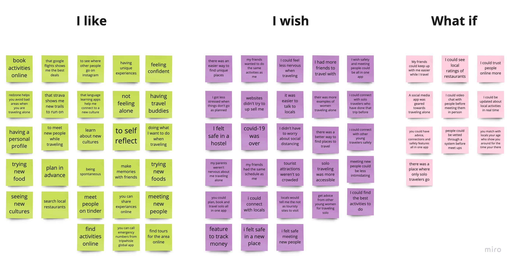
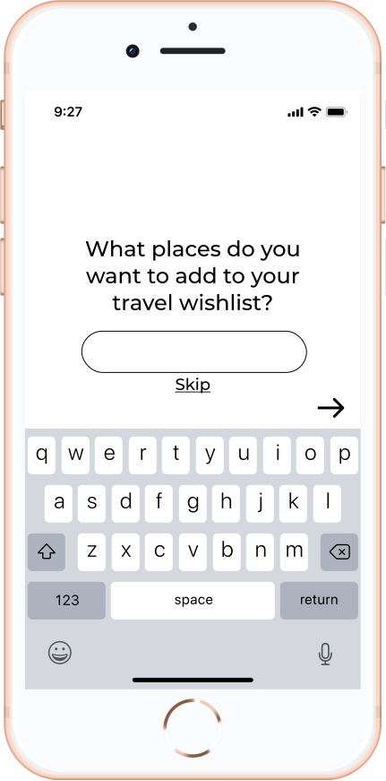
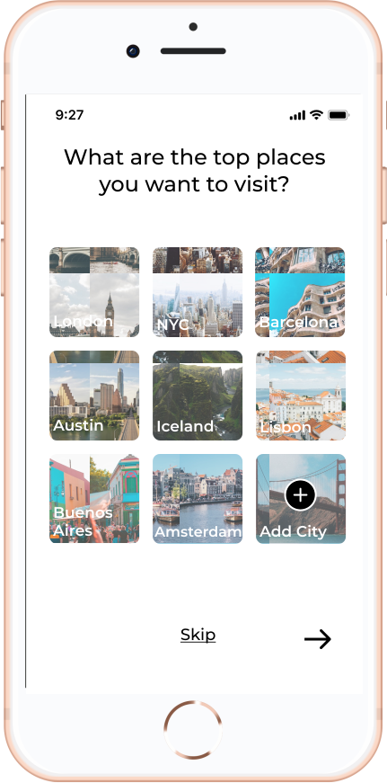
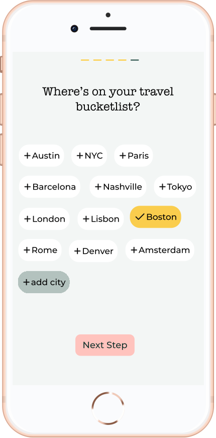
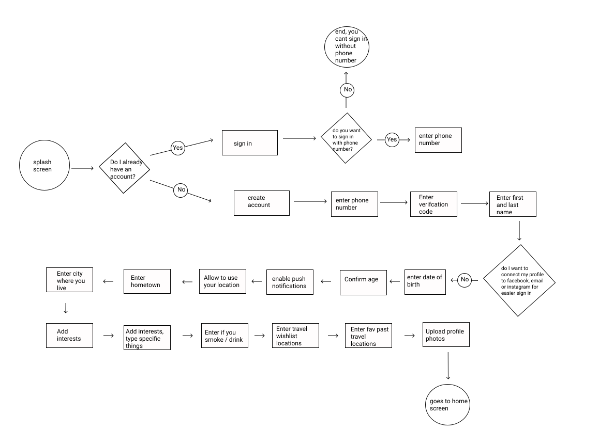
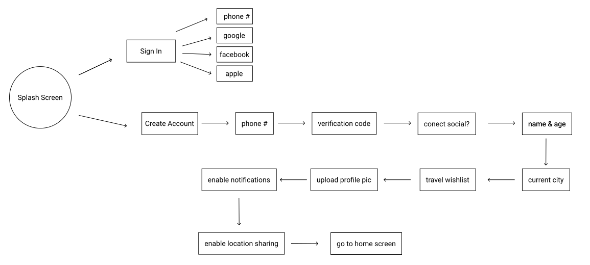
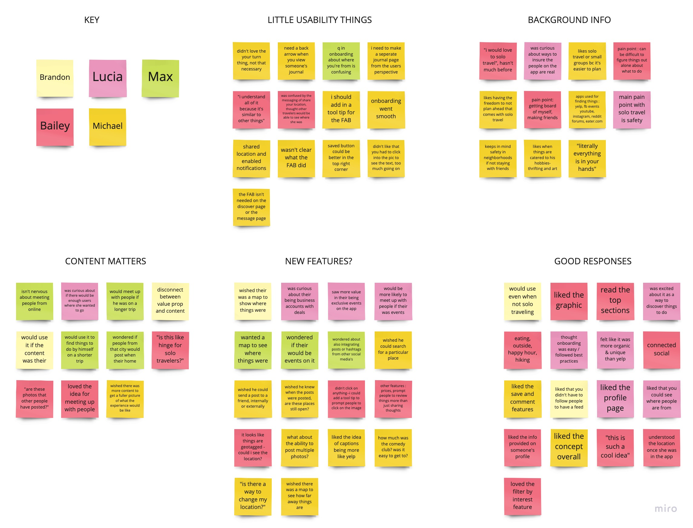
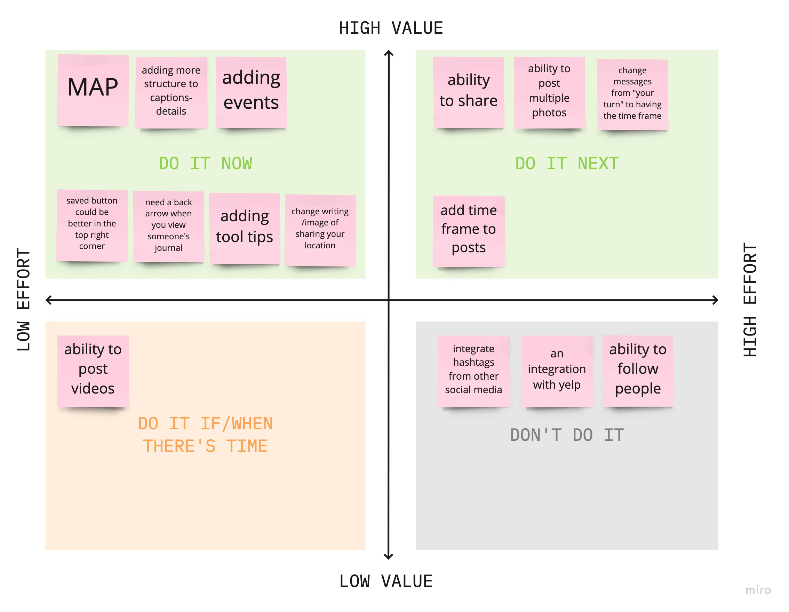
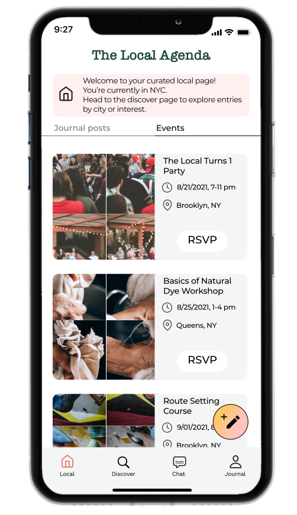

UX Case Study: The Local Agenda

For my first bootcamp project, I and a partner did user research and problem identification around the concept of travel. The beginning stages of this case study such as research and our first iterations of onboarding are from that project.
5 months later I individually revisisted the project, prototyping key features and doing concept testing to further explore our Hypothesis.
3 Weeks
UX Designer
UI Designer: Calendar Interface
Miro, Figma
People are ready to travel again after many months of COVID-19 related restrictions. Young people feel open to solo travel because of the flexibility, but are worried about missing out on social experinces and local insights that come from traveling with or to visit friends.
The Local Agenda is a travel app that will help solo travelers feel less intimated in a new place; by connecting them with locals and fellow travelers to discover unique experiences.
We believe that people have a desire to travel alone, but are sometimes hesitant to take the leap to do so. People might be more confident to try solo travel if we made an app that could assist them in feeling safe, confident, and socially connected, while still having the benefits of traveling alone.
We might do this by creating tools for an organic way for people to discover local insights into activities and meet up with people with similar interests.
Building Empathy and Understanding the Problem
We began by conducting 5 interviews with people in their early 20s to gather insight about general attitudes and habits around travel.
We discovered an openness and curiosity around the idea of solo travel and meeting new people, but a hesitancy about the uncertainties that come with being alone in a new place.
After analyzing our data from the interviews, we decided to narrow our focus to solo travel. We created a survey to better understand people’s attitudes around specifically solo travel.
We surveyed 31 people between the ages of 18-30 and found an openness to solo travel, as well as some key pain points that are preventing some from trying it.
How might we create an app that assits solo travelers in feeling connected to people around them and have more confidence in finding out what to do alone?
In order to narrow our focus and define the usable solutions, we used the “I like I wish what if” brainstorming method from the perspective of our user, and then placed features in a prioritization matrix.
The Local Agenda is the social travel app centered around people. We help people make connections in a new place, and gain insight into local knowledge of unique and enriching experiences.
To keep us connected to our users goals and pain points, we created a storyboard before going into building the app.

As our bootcamp assignment was to create an onboarding flow, we created a usability testing plan with the tasks of completing onboarding and creating a profile, and tested five users at each iteration. Below illustrates the evolution of our onboarding user flow and screens.
Iteration #1
Too much time thinking leads to abandonment.
Iteration #2
Some type gets lost because of the images.
Iteration #3
Button states make clear to the user which choices they've already selected
After conducting testing with our initial sketches and mid-fidelity wireframes, we realized we could streamline the flow to be more consise and take out a few questions that users felt were unnecessary for the purpose of the app.
Initial Onboarding User Flow
User Flow after 3 Rounds of Testing

No need to follow people in order to see content

This gives users the ability to transport themselves virtually to plan future trips
Ability to set certain posts as private

Pending messages gives users the ability to approve of connection requests before they recieve messages
This gives users the ability to verify someone's identity before meeting up with them
After building some key features of the app, I made a concept testing plan in hopes of validating the core value propisition of The Local Agenda. The big question is --- Is this worth continuing to persue? Is it getting at solving a core problem that people have?
I achieved my goal of having 3/5 users (60%) mention using the app or talking about how they would use it without me asking them directly. Having conversation with users after they experinced the app gave me great insight about what to focus on going foward, as many mentioned features they were wondering about.
With the basic value of the app validated, I created an affinity diagram with insights from my new interviews and a second feature prioritization.
 Before

Instead of having to add tool tips to prompt the user, I decoded it was best to stick closer to social media conventions and display the caption beneath the post.
After

Map

Events
Below is my clickable prototype. Play around to see the features in action.
It was such a fun process for me to return to some of my earliest bootcamp work to iterate and test my hypothesis more thoroughly now that I am more confident in qualitative research.
Through testing this app, I learned the value of using conventions that users are already comfortable with, as it makes the experience much more intutuive. I’m looking forward to continuing to discover the balance of knowing when to innovate and when to use conventions.